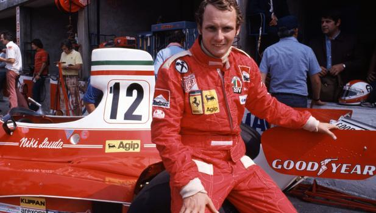
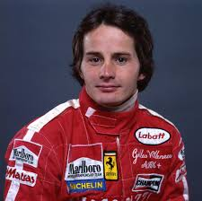
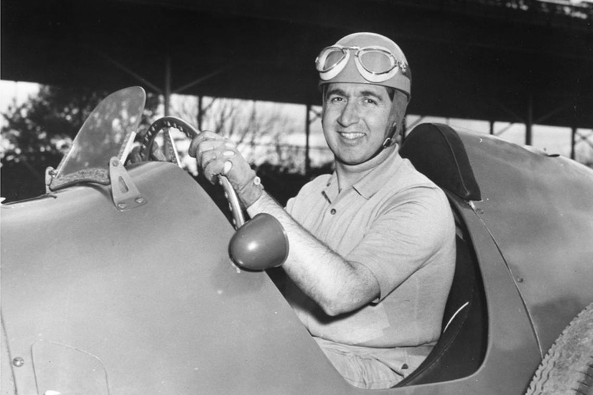
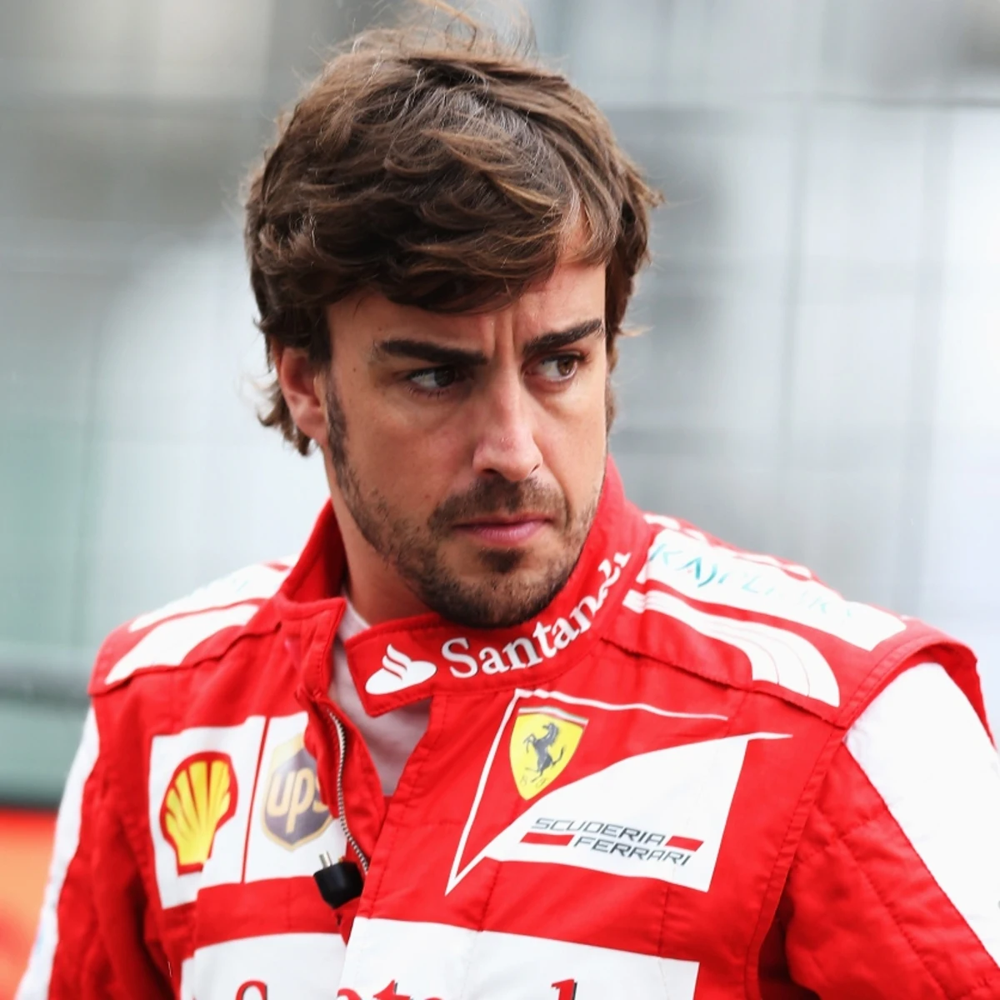
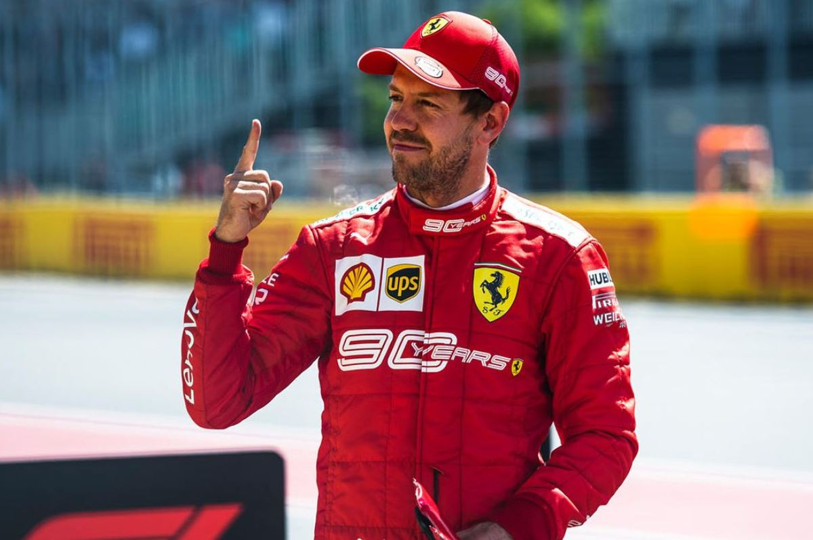
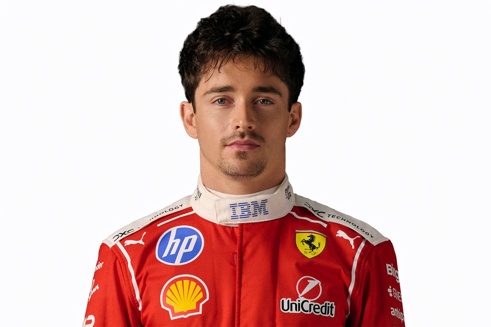

Leyendas de la Scuderia
Los pilotos que escribieron la historia de Ferrari

Michael Schumacher
1996 - 2006
7 Campeonatos Mundiales • 72 Victorias con Ferrari • Leyenda indiscutible de la Fórmula 1

Niki Lauda
1974 - 1977
3 Campeonatos Mundiales • 15 Victorias • Campeón con Ferrari y otras escuderías

Gilles Villeneuve
1978 - 1982
6 Victorias • Piloto más carismático de los 80 • Ídolo de la historia de Ferrari

Alberto Ascari
1952 - 1955
2 Campeonatos Mundiales • Primer campeón con Ferrari • 13 Victorias

Kimi Räikkönen
2007 - 2009, 2014 - 2018
1 Campeonato Mundial (2007) • 21 Victorias • El Rey del Hielo

Fernando Alonso
2010 - 2014
2 Campeonatos Mundiales • 11 Victorias con Ferrari • Bicampeón mundial en la escudería

Sebastian Vettel
2015 - 2020
4 Campeonatos Mundiales • 14 Victorias con Ferrari • Recordista de victorias

Charles Leclerc
2019 - Presente
8 Victorias • El futuro de Ferrari • Piloto monegasco de la nueva era